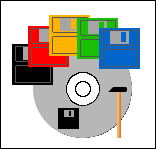

|
| Home | Map | Index | Search |
|
|
|
| News |
| |
Archives |
| |
Links |
| |
About LF |
|
| This article is available in: English Deutsch Francais Nederlands |
by Tjabo Kloppenburg (homepage)
About the author:
I've been infected in 1996. Slackware 3.1 :-). I like
scripting in languages like Python, Perl, GAWK and so on. And
I'm interested in booting devices.
Translated to English by:
Tjabo Kloppenburg (homepage)
Content:
|
8cm-Multiboot-CDROM with modified Knoppix linux

Abstract:
After reading some linuxfocus articles and other web pages I
finally found a reliable method to create bootable cdroms,
booting clean bootdisks (without viruses), single-disk linux
disks, or an adapted knoppix system.
Burned on a 8cm cdrom with 183MB. It fits in every pocket, and
can be helpful in many situations.
_________________ _________________ _________________
|
Prerequisites
I assume that you have some basic linux knowledge and you know how to burn CDs. You should
have a cdrom burner that can burn CD-RW, too. That's a good
thing, because making errors is one of the ways how we learn...
You should have a CD-RW disk, some 8cm CD-Rs (or CD-RW), and a
running linux system with some hundred MB free.
Later - when integrating knoppix - we should have fast network
access, because we need to install packages from the internet. If
you know how to setup nfs or samba to provide a local debian
mirror, you don't need the fast network access. Finally, you
should have some debian knowledge (install and deinstall
packages), or a friend / irc channel you can ask. And you
should know how to use a loopback device.
The Basics
Booting from cdroms is very simliar to booting from a
floppy disk or hard disk. Something from the disk is read into
memory by the BIOS and then started. In the early days of
cdroms they were not intended to be used for booting, so the
hardware developers had to do some magic: after cooking some
vendor specific BIOS changes they finally defined the "el
torito" standard.
It defines a structure on the cdrom containing a bootdisk image,
and some code in the BIOS to load this structure into memory -
emulating a floppy disk in memory. After loading the disk into
memory it boots like every other boot disk.
With this floppy emulation we could build a bootable cdrom with
a single boot disk image, booting a 1.44MB disk, or one with
2.44MB. You've never seen such a floppy, but the BIOS can
handle it. When booting from cdrom we do not need a 2.88 MB
disk - just a disk image created with the loop device and some
tools.
A single disk is not yet a multi boot disk. We need a tool to load and
start other boot images from a file system. Boot-Scriptor is
our friend. With boot-scriptor we'll boot from cdrom with a
loader (without disk emulation. that's possible, too), and then
we'll choose a disk image in a menu. Boot-Scriptor will do some
magic to load the image into a floppy disk emulation, where the
image boots like a floppy disk in the drive.
These bootdisks can be images of disks like windoze bootdisks
of different versions, an NT password changer, mini linux
distributions, or a knoppix bootdisk to boot a medium size
knoppix system.
Enough talk, let's start
We need a directory with enough empty space to build the
directory structure of our cdrom. I assume we have plenty of
space in "/data". The base directory of our
project may be "/data/mboot". Inside I created two
directories, "toolcd/" (cdrom content) and
"/archive" (orginial versions of the tools I use,
like virus scanners).
Boot menu with boot scriptor
Get the archive and the INI files from Boot-Scriptor (bootscriptor.org).
There's no documentation in the archive, you'll
find it only on the website.
Boot-Scriptor need its own directory "bscript/" on
the cdrom, with the loader, an optional graphics file (see
docs), and the file called "bscript.ini".
This file defines the boot menu in a language like basic, with
commands like "print", "onkey"
(branch on key press), and "memdisk" (bootdisk
image).
Take a look at this small example, and write your own ini
file:
print "\ac\c0e--=> my multi boot cdrom with linux <=--"
print "F1 Bootdisk1"
print " w warm reboot"
MenuLoop:
onkey f1 goto bootDisk1
onkey w reboot warm
goto MenuLoop
bootDisk1:
memdisk \images\boot1.img
There is a bunch of other commands. Make a local copy of the
boot scriptor documentaion, and place it somewhere in the directory structure of the
cdrom. You'll need this in your early steps to understand the
basic commands.
How to create bootdisk images?
For a first test cdrom we need just a single bootdisk like a
windoze bootdisk. Or a linux bootdisk created with lilo. Or try
one of those tiny single-disk linux systems like HAL or
TomsRtBt (2.88MB). Ask your favorite search engine on the
web.
We use "dd" to create a disk image file from the disk:
( insert disk )
# cd /data/mboot/toolcd
# mkdir images (directory for the disk images)
# dd if=/dev/fd0 of=images/boot1.img
Now let's create the ISO-File, and burn it.
The program "mkisofs" has to be called with the "-b" option,
to ensure proper installation of the boot loader. The path of
the argument of "-b" is relative to the base directory of the
cdrom ("toolcd/"):
# cd /data/mboot
# mkisofs -r -o iso.01 -b bscript/loader.bin \
-no-emul-boot -boot-load-size 4 toolcd
Now there's one thing left: burn the iso file on a CD-RW. You
can burn it on a CD-R, too. But just one or two wrong
characters in the file "
bscript.ini" can turn your
fresh cdrom into something finding its place in the dustbin. So
better burn a CD-RW :-).
If you take a used CD-RW, you've got to blank it.
"
cdrecord" has two modes:
"
blank=fast" and "
blank=all". The
fast mode is faster :).
Before burning you need to detect the
dev
parameter of the burner. Enter "
cdrecord -scanbus"
to see all devices available. If there's no device, you
probably have to load a device driver module like
"
ide-scsi" with a command like "
modprobe
ide-scsi".
Now try again. Here's an example about how to find out the
device (here: 0,0,0) and burn the iso file on a CD-RW:
# cdrecord -scanbus
Cdrecord 1.10 (i686-pc-linux-gnu) (C) 1995-2001 J. Schilling
Linux sg driver version: 3.1.22
Using libscg version 'schily-0.5'
scsibus0:
0,0,0 0) 'LG ' 'CD-RW CED-8083B ' '1.05' Removable CD-ROM
...
# cdrecord -v dev=0,0,0 speed=32 iso.01
Some CD-RWs have slow speeds (e.g.: 4). But that does not
matter, "cdrecord" reads media description data from the CD-RW,
and automagically uses the highest possible speed of the media
below or equal the given value (32).
When the burning process is complete you should give it a try and boot the
cdrom.
Using a Makefile
The "mkisofs" call has many characters, making
it easy to forget or mistype something. "cdrecord"
needs correct parameters, too, so it is a good idea to use a
script or Makefile to ensure correct command arguments. We'll
use a Makefile for the "make" command. Install it
if you don't have it on your system. "make" is one of the
commands a programmer should know.
We'll place the Makefile into the cdrom dircetory structure,
linking it into the "mboot/" directory.
It is a
good idea to place all things we need for remastering onto the
cdrom. It makes it possible to create a new, better cdrom even
if you don't have the files anymore on harddisk, so it's a good backup too... :-).
The Makefile can be simple. Here's an example:
BASE = toolcd
DEV = 0,0,0
SPEED = 4
VERSION = 01
ISO = iso.$(BASE).$(VERSION)
OPTIONS= -b bscript/loader.bin -no-emul-boot -boot-load-size 4
blank:
cdrecord -v dev=$(DEV) blank=fast
blankall:
cdrecord -v dev=$(DEV) blank=all
iso:
echo "deleting ~ files:"
@find $(BASE) -name "*~" -exec rm {} \;
echo "creating iso file:"
@mkisofs -r -o $(ISO) $(OPTIONS) $(BASE)
@echo
ls -al $(ISO)
burn:
cdrecord -v dev=$(DEV) speed=$(SPEED) $(ISO)
The indent is done with the
TAB key.
Don't use spaces
for this!
Like mentioned before we put the Makefile in a directory inside
the cdrom structure. A place like
"
/data/mboot/toolcd/scripts" is good. We'll
softlink it into "
/data/mboot/Makefile":
# cd /data/mboot
# ln -s toolcd/scripts/Makefile Makefile
To create a new cdrom after altering some things (bootdisk
images, virus scanners) we now just have to enter three simple
commands in the "
mboot/" directory:
# make blank
# make iso
# make burn
That's easier, isn't it?
More bootdisks
You'll find more bootdisks in your disk boxes, and in the
world wide web. But remember that you never really know what's
on a disk image downloaded from internet. I think it's always a
good idea to ask a search engine like google, whether someone
encountered problems using a bootdisk from a site. And run a
virus scanner over the disks.
I've taken some bootdisks from www.bootdisk.com. The disks are
english versions, most of them with cdrom support. You can
access a virus scanner on the cdrom, or to run a bios update
from another cdrom. I really like the "drdflash" bootdisk
image, providing a minimal bootdisk with enough space for a
BIOS flasher. Just use "rawrite" (dos) or
"dd" (linux) to write the image on a disk, and you
have a bootable disk for the flasher in a minute. I've been on
a LAN party and saw how long a group of linux gurus needed to
find a bootable floppy disk for a BIOS update... :-)
Note: You can find "rawrite.exe" on most of the
common linux distribution cdroms.
More content
With your tiny and handy 8cm cdrom you've got a tool to boot
a clean disk everywhere. Why not putting a virus scanner onto
the cdrom? I've taken "F-Prot" from F-Secure. They have a linux and
a dos version for free to download.
The only problem is the question about how to update the virus
definitions on the cdrom. I've heard of 8cm CD-RWs, but I've
never seen one in a shop. Too bad. Another solution would be to
boot a minimal linux system from our 8cm cdrom, to download new
definition files from internet.
Two of the problems I faced with f-prot where:
- The '-' character in 'f-prot' changed into a '_' when
mounting the cdrom,
- The start script assumed to find the binary in an exotic
location.
My quick solution was to copy the binary to the name 'fprot',
and to forget the script :).
The next part of this article is about how to integrate a linux
distribution
in our cdrom, giving us a mighty tool for almost every panic
situation.
Integrating knoppix
If you don't know Knoppix by now, have a
look at it! It is a complete bootable linux system with 2-3 GB
software on a single 650MB live cdrom. With hardware detection
and other useful features. But it doesn't fit on our mini
cdrom.
Don't cry, because it is possible to remaster the knoppix cdrom
(or a clone project). You just need some basic debian
knowledge, and some more space on your hard disk.
Knoppix uses some special magic to put 2-3 GB of software on a
650MB cdrom: the filesystem has been compressed into the file
"/KNOPPIX/KNOPPIX", and is mounted by the initial
init process of a booting floppy disk (*) by using a special
"cloop" driver module. (* In fact it is the
content of a bootdisk image file used when calling
"mkisofs" with the "-b" switch.)
The bootdisk image that has been used to create the knoppix
cdrom can be found in the "/KNOPPIX" directory of
every knoppix cdrom: "boot.img". There's again the
idea to have all genes for the next evolutionary step "on
board"...
I suggest mounting the knoppix bootdisk image with the loop
device to try to understand how the boot process of knoppix (or
linux) works. Search the web for the "bootdisk howto" to find
more information. One of the files you find on the disk image
is a ".gz" compressed file with a filesystem image inside. It is
the initial ramdisk with the ramdisk filesystem used at the
early moments of boot time.
So when booting knoppix this happens: The "boot.img" file
written into the iso file loads the linux kernel from the
emulated floppy disk, loading the initial ramdisk. The linuxrc
process loads the "cloop.o" driver module, and searches for a
file "/KNOPPIX/KNOPPIX" on all attached devices with a known
filesystem. Yes, it should be possible to boot the compressed
knoppix even from a hard disk. But I've never tested that.
After finding a device with the compressed filesystem, it
becomes mounted, and hardware detection and all the other
things start.
The floppy disk "boot.img" does not care about from where it
boots (drive, emulated), so it's rather simple to integrate it
into our multi boot cdrom: copy "boot.img" in the
"images/" directory, and add a hotkey in
"bscript.ini".
Adapt knoppix
An original knoppix cdrom is much too big for our handy 8cm
cdrom. Remember: we have 183 MB on a mini cdrom. We need to
delete lots of stuff, but that's too much work. Why not
benefit from the project of someone else? The website Knoppix
Customizations lists a couple of modified knoppix versions,
some of them minimalized to a compressed size around 50-60 MB.
I decided to use "Model_k". It is small, but there's no GUI,
and support for non-english keyboards is missing. Perhaps "Damn
Small Linux" is better...
I took the instructions you find below from a
document by Sunil Thomas
Thonikuzhiyil, who describes the process of remastering
very detailed. Read it if you want to know how to change the
boot kernel or the initial ramdisk of the bootdisk. But
normally we do not need all that stuff when remastering
"Model_k" or a similiar system for our mini cdrom...
The basic idea about remastering knoppix lies in the fact
that knoppix is a full working debian system - when there's a
writable fileystem [a cdrom is read-only :)]. The main part of
remastering is the installation and deinstallation of packages.
Not much magic.
To alter a knoppix we have to boot it first. After that the
following steps are necessary:
- mount a data space or partition,
- copy all uncompressed files from the cloop mounted
filesystem,
- chroot into the uncompressed system,
- mount /proc
- install or de-install software,
- umount /proc,
- exit the chroot environment,
- create a new compressed filesystem.
The new compressed filesystem has to be copied to
"/KNOPPIX/KNOPPIX" in our cdrom directory structure where the
knoppix boot process will find it.
Now boot Knoppix and...:
Mount a data space and copy files:
# mkdir /1
# mount -t ext2 /dev/hda<n> /1
# cp -Rp /KNOPPIX /1
Change into the uncompressed, writable environment:
# chroot /1/KNOPPIX
# mount -t proc /proc proc
Configure the network:
# (use ifconfig, when there's no DHCP server in your network.)
# (change nameserver setup when there's no DHCP. Delete the link
"/etc/resolv.conf" and create your own file.)
Install / deinstall packages:
# apt-get install joe (Model_k 1.2 comes without editor :) )
# ...
When ready, leave the system:
# (if you changed /etc/resolv.conf, delete it and add the link.)
# umount /proc
# exit
Now we have to compress the umounted filesystem. The boot
process mounts "
/KNOPPIX/KNOPPIX" with
"
cloop". We already know "
loop" - we
use it to mount a filesystem file. "
cloop" is a
"
loop" with (de)compression, so we have to create
a filesystem with "
mkisofs", and compress it with
a special program from knoppix:
"
create_compressed_fs":
# mkisofs -R /1/KNOPPIX | create_compressed_fs - 65536 > /1/KNOPPIX.2
As you see we pipe the output of "mkisofs" directly into the
compression tool. Make a copy of your original
KNOPPIX file, and copy the result file
"KNOPPIX.2" over "KNOPPIX/KNOPPIX" of
your cdrom directory structure. Now make and burn another
cdrom, and try out your "new" knoppix variant.
Conclusion
We've seen it's not that difficult to create a handy multi
boot cdrom, with useful tools on it helping us in different
situations. We did not invent every wheel, but used wheels
invented by others, with some extra magic added.
We've put all we needed on that cdrom, so we have a backup at
hand - and it is possible to remaster the cdrom with just the
data from the cdrom.
I hope you enjoyed my small article.
Bye!
Talkback form for this article
Every article has its own talkback page. On this page you can submit a comment or look at comments from other readers:
Webpages maintained by the LinuxFocus Editor team
© Tjabo Kloppenburg, FDL
LinuxFocus.org
|
Translation information:
| de --> -- : Tjabo Kloppenburg (homepage) |
| de --> en: Tjabo Kloppenburg (homepage) |
|
2003-05-01, generated by lfparser version 2.37